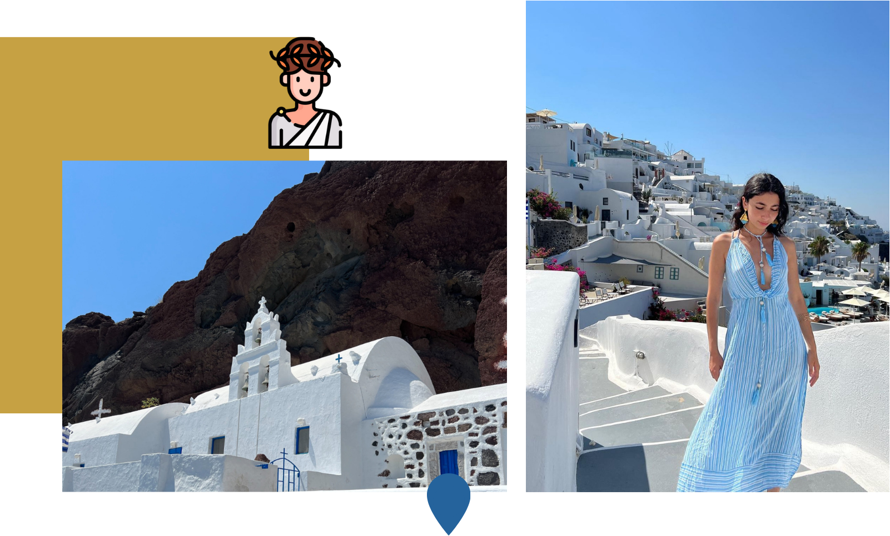
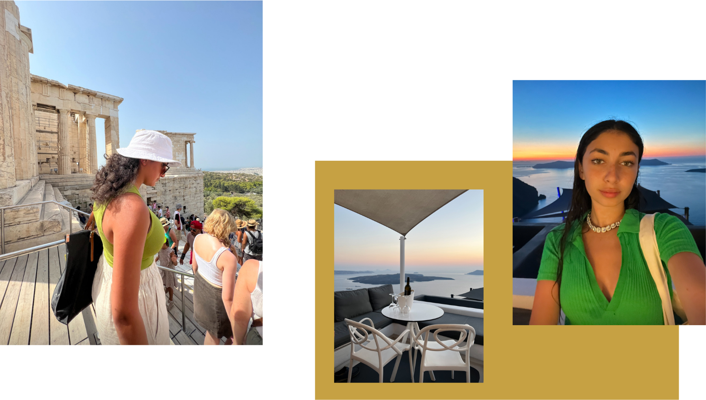
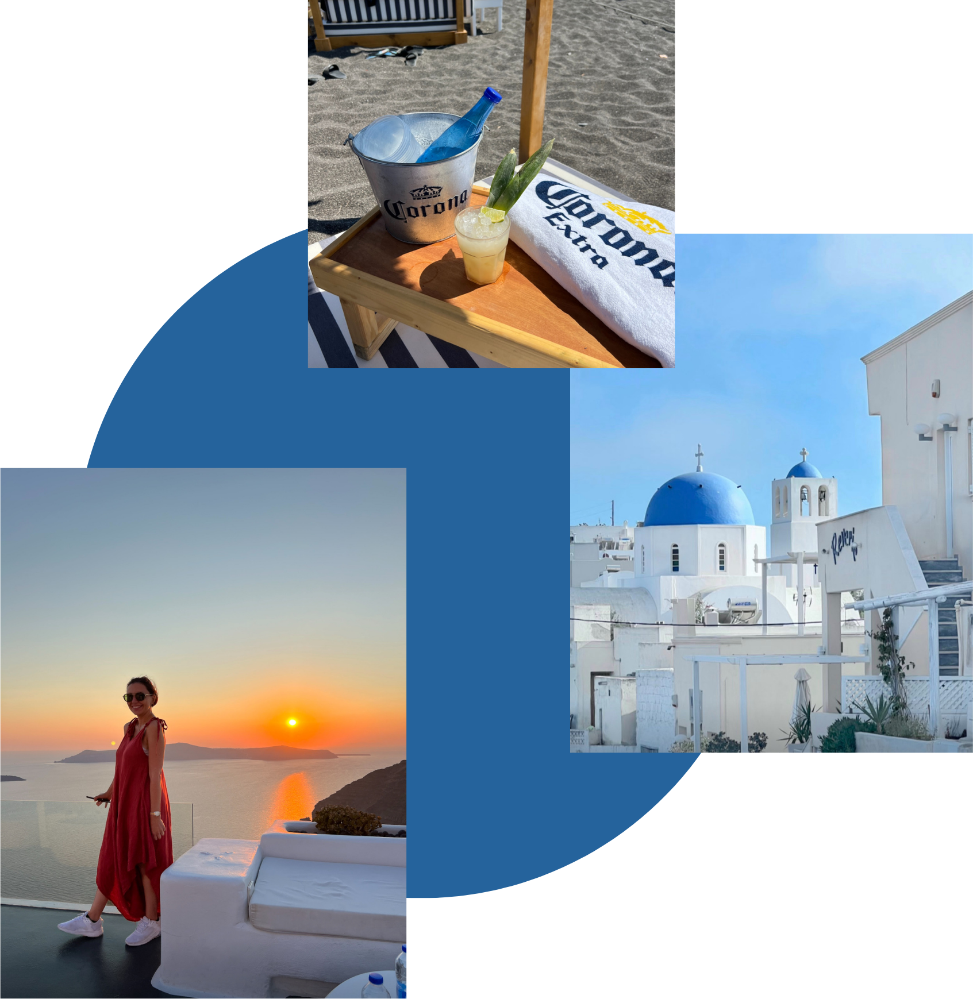

TRAVEL SCRAPBOOK
GREECE

santorini & athens


EVERYONE TALKS ABOUT HOW GREECE IS A
PLACE YOU HAVE TO VISIT AT LEAST ONCE
IN YOUR LIFETIME, AND I AM OFTEN SKEPTICAL
ABOUT WHAT OTHERS SAY, I MEAN LOOK HOW
THE PARIS ROMANTICIZATION TURNED OUT. BUT
GRECE REALLY WAS EVERYTHING PEOPLE SAID IT
WAS, AND MORE. EXCEPTIONAL VIEWS, FOOD AND
MOST IMPORTANTLY PEACE. I HAD NEVER FELT SO
RELAXED. IT WAS SUCH A PERFECT VACATION,
AND I HOPE I GET TO GO AGAIN AND SOON,
ESPECIALLY SANTORINI & ATHENS.